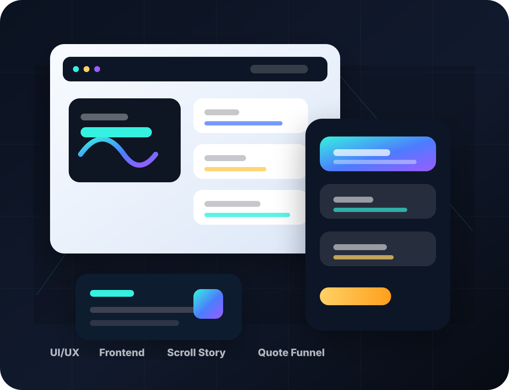

Kurumsal web sitesi
Markanizi daha premium gosteren, mobilde temiz calisan ve teklif aksiyonu ureten kurumsal site.
Premium web tasarim ve web uygulama gelistirme
bekolitech; premium landing page, kurumsal web sitesi, yonetim paneli ve satis odakli dijital deneyim tasarlar. Hedef yalnizca guzel bir ekran cikarmak degil; markanizi daha guclu gostermek, guven uretmek ve ziyaretciyi basvuruya cevirmektir.

Hizmetler
Markanizi daha premium gosteren, mobilde temiz calisan ve teklif aksiyonu ureten kurumsal site.
Reklamdan gelen kullaniciyi dagitmadan urunu anlatarak lead toplayan yuksek donusumlu sayfalar.
Admin panel, bayi paneli, musteri alani, operasyon ekrani ve ozel is akislarina uygun arayuzler.
Sanal POS, odeme linki, raporlama, mutabakat ve banka entegrasyon ekranlari icin premium deneyim.
Scroll ilerledikce urunu buyuten, degisimi hissettiren ve gucu gosteren kontrollu motion sistemleri.
Form, WhatsApp, e-posta, odeme ve CTA akislari ile ziyaretciyi dogrudan talebe ceviren kurgu.
Surec
Bu surec tasarim gosterisi degil. Hedef; ziyaretciyi dogru mesajla yakalayan, guven ureten ve satis ekibine temiz talep birakan bir urun cikarmak.
Hedef sektor, sayfa sayisi, teknik ihtiyac, teslim takvimi ve beklenti netlestirilir.
Ilk ekran, basvuru akisi, mesaj hiyerarsisi ve ziyaretci yolu net bir duzene oturtulur.
Arayuz, tipografi, renk, interaksiyon ve GSAP tabanli animasyon kurgusu olusturulur.
Responsive frontend, formlar, teknik kontrol ve canliya gecis icin son paket teslim edilir.
Calisma tipi
Insaat, saglik, hukuk, danismanlik ve B2B hizmet firmalari icin premium algi ve net iletisim.
Meta/Google reklamindan gelen ziyaretciyi kaybetmeden talebe ceviren net ve hizli donusum sayfasi.
Giris, dashboard, tablo, rapor, filtre, kullanici yonetimi ve musteri akislarina uygun ekran sistemi.
Calisma 01
Calisma 02
Calisma 03
Calisma 04
Paketler
Kurumsal kimligi net anlatan, 3-5 bolumlu ve hizli teslim edilen giris paketi.
Satis odakli, animasyonlu, daha fazla ekranli ve premium algi kuran ana paket.
Panel, dashboard, ozel yazilim ve entegrasyon gerektiren daha buyuk projeler icin.
Teknik yaklasim
Tasarim, animasyon, performans ve basvuru akisi ayni hedefe baglanir: markayi daha guclu gostermek ve ticari talebi toplamaya baslamak.
project: "bekolitech production site"
goals:
- premium first impression
- clear service positioning
- lead capture and contact flow
- mobile-ready production delivery
stack:
- HTML / CSS / JavaScript
- GSAP ScrollTrigger
- configurable form endpointTeknoloji ve entegrasyon
SSS
Hayir. Projenin ticari hedefi, sektor dili ve ihtiyaci uzerinden ozel kurgu cikiyor.
Yanlis kullanilirsa evet. Bu yuzden sadece anlamli ve kontrollu motion kuruluyor.
Evet. Form yapisi e-posta, endpoint veya baska bir sisteme baglanacak sekilde kurulabilir.
Evet. Landing page disinda panel, dashboard ve ozel is akislarina uygun arayuzler tasarlaniyor.
Basvuru ve teklif
Bu alan artik demo degil. Form; dogrulama, kapsam secimi ve iletisim aksiyonlari ile gercek bir basvuru akisi gibi calisir. Endpoint baglandiginda canli toplama icin hazir.